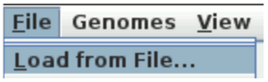
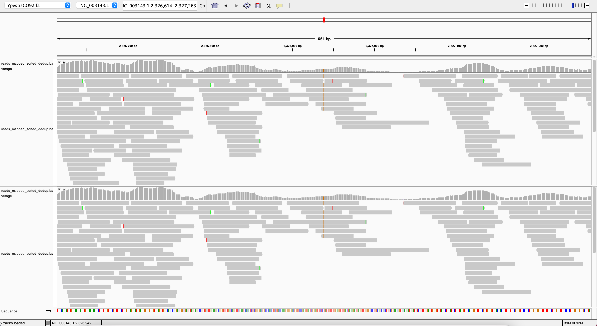
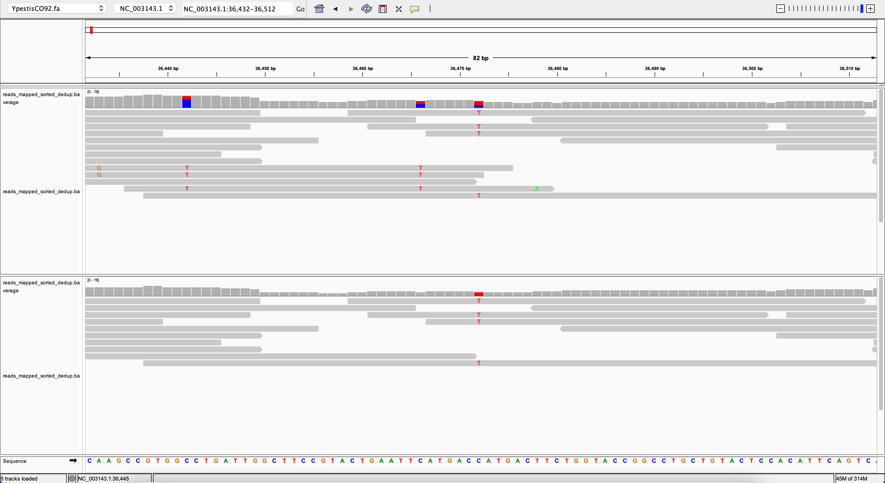
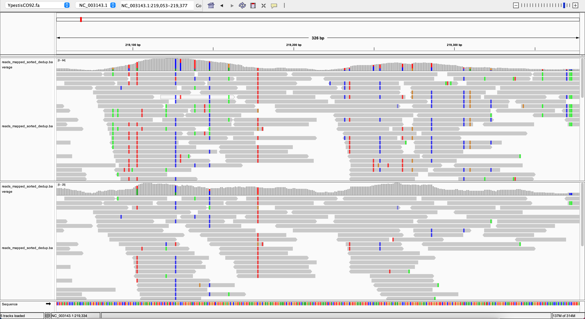
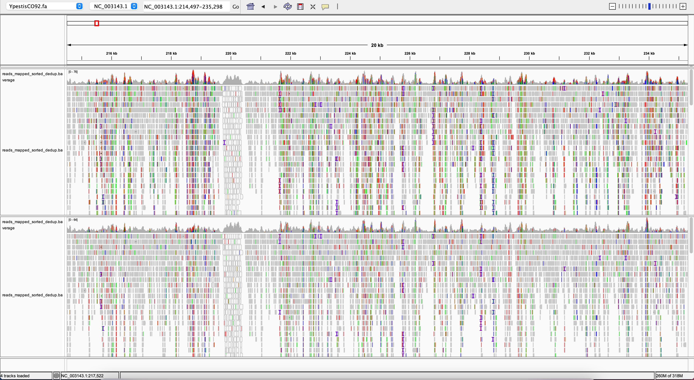

14 Genome Mapping
For this chapter’s exercises, if not already performed, you will need to download the chapter’s dataset, decompress the archive, and create and activate the conda environment.
Do this, use wget or right click and save to download this Zenodo archive: 10.5281/zenodo.17154630, and unpack.
tar xvf genome-mapping.tar.gz
cd genome-mapping/You can then create the subsequently activate environment with the following.
conda env create -f genome-mapping.yml
conda activate genome-mappingMapping/aligning to a reference genome is one way of reconstructing genomic information from DNA sequencing reads. This allows for identification of differences between the genome from your sample and the reference genome. This information can be used for example for comparative analyses such as in phylogenetics. For a detailed explanation of the read alignment problem and an overview of concepts for solving it, please see (Reinert et al. 2015).
In this session we will map two samples to the Yersinia pestis (plague) genome using different parameter sets. We will do this “manually” in the sense that we will use all necessary commands one by one in the terminal. These commands usually run in the background when you apply DNA sequencing data processing pipelines.
We will be using the Burrows-Wheeler Aligner (Li and Durbin 2010, http://bio-bwa.sourceforge.net). There are different algorithms implemented for different types of data (e.g. different read lengths). Here, we use BWA backtrack (bwa aln), which is suitable for Illumina sequences up to 100bp. Other algorithms are bwa mem and bwa sw for longer reads.
Your learning objectives:
- Understand the Basics: You will be able to define mapping and describe the basic principles of metagenomic mapping and the different parameters used.
- Apply Mapping Techniques: You will be able to apply metagenomic mapping techniques to align raw sequence data to a reference genome in a step-by-step manner.
- Use Bioinformatics Tools: You will be able to use the command line to apply different metagenomic mappers and perform genotype analysis via multivcfanalyzer in the standard settings. You will be able to inspect results in the IGV viewer.
- Interpret Results: You will be able to interpret the results of a mapping experiment and discuss their implications. You will also be able to understand the genotyping tool multiVCFanalycer.
- Be Aware and Able to Read Up: You will know about the existence of multiple mapping algorithms and the importance of parameter research and adjustment. You will know that the IGV viewer is one option to inspect mapping results but not the only one.
14.1 Reference Genome
For mapping we need a reference genome in FASTA format. Ideally we use a genome from the same species that our data relates to or, if not available, a closely related species. The selection of the correct reference genome is highly relevant. E.g. if the chosen genome differs too much from the organism the data relates to, it might not be possible to map most of the reads. Reference genomes can be retrieved from comprehensive databases such provided by the NCBI (https://www.ncbi.nlm.nih.gov/).
In your directory, you can find 2 samples and your reference. As a first step we will index our reference genome (make sure you are inside your directory).
The first index we will generate is for bwa.
bwa index YpestisCO92.faThe second index will be used by the genome browser we will apply to our results later on.
samtools faidx YpestisCO92.faWe need to build a third index that is necessary for the genotyping step, which comes later after mapping.
picard CreateSequenceDictionary R=YpestisCO92.fa14.2 Mapping Parameters
We will be using bwa aln, but we need to specify parameters. For now we will concentrate on the “seed length” and the “maximum edit distance”. We will use the default setting for all other parameters during this session. The choice of the right parameters depend on many factors such as the type of data and the specific use case. One aspect is the mapping sensitivity, i.e. how different a read can be from the chosen reference and still be mapped. In this context we generally differentiate between strict and lenient mapping parameters.
As many other mapping algorithms bwa uses a so-called “seed-and-extend” approach. I.e. it initially maps the first N nucleotides of each read to the genome with relatively few mismatches and thereby determines candidate positions for the more time-intensive full alignment.
A short seed length will generate more such candidate positions and therefore mapping will take longer, but it will also be more sensitive, i.e. there can be more differences between the read and the genome. Long seeds are less sensitive but the mapping procedure is faster.
In this session we will use the following two parameter sets:
Lenient
Allow for more mismatches → -n 0.01
Short seed length → -l 16
Strict
Allow for less mismatches → -n 0.1
Long seed length → -l 32
We will be working with pre-processed files (sample1.fastq.gz, sample2.fastq.gz), i.e. any quality filtering and removal of sequencing adapters is already done.
We will map each file once with lenient and once with strict parameters. For this, we will make 4 separate directories, to avoid mixing up files.
mkdir sample1_lenient sample2_lenient sample1_strict sample2_strict14.3 Mapping Sample1
Let’s begin with a lenient mapping of sample1.
Go into the corresponding folder.
cd sample1_lenientPerform the bwa alignment, here for sample1, and specify lenient mapping parameters.
bwa aln -n 0.01 -l 16 ../YpestisCO92.fa ../sample1.fastq.gz > reads_file.saiProceed with writing the mapping in sam format (Li et al. 2009, https://en.wikipedia.org/wiki/SAM_(file_format)).
bwa samse -r '@RG\tID:all\tLB:NA\tPL:illumina\tPU:NA\tSM:NA' ../YpestisCO92.fa reads_file.sai ../sample1.fastq.gz > reads_mapped.samNote that we have specified the sequencing platform (Illumina) by creating a so-called “Read Group” (-r). This information is used later during the genotyping step.
Convert SAM file to binary format (BAM file).
samtools view -b -S reads_mapped.sam > reads_mapped.bamFor processing of sam and bam files we use samtools (Li et al. 2009, https://github.com/samtools/samtools).
-b specifies to output in BAM format. (-S specifies input is SAM, can be omitted in recent versions).
Now we sort the bam file → Sort alignments by leftmost coordinates.
samtools sort reads_mapped.bam > reads_mapped_sorted.bamThe sorted bam file needs to be indexed → more efficient for further processing.
samtools index reads_mapped_sorted.bamDeduplication → Removal of reads from duplicated fragments.
samtools rmdup -s reads_mapped_sorted.bam reads_mapped_sorted_dedup.bamsamtools index reads_mapped_sorted_dedup.bamDuplicated reads are usually a consequence of amplification of the DNA fragments in the lab. Therefore, they are not biologically meaningful.
We have now completed the mapping procedure. Let’s have a look at our mapping results.
samtools view reads_mapped_sorted_dedup.bam | less -S(exit by pressing q)
We can also get a summary about the number of mapped reads. For this we use the samtools idxstats command (http://www.htslib.org/doc/samtools-idxstats.html).
samtools idxstats reads_mapped_sorted_dedup.bam14.4 Genotyping
The next step we need to perform is genotyping, i.e. the identification of all SNPs that differentiate the sample from the reference. For this we use the ‘Genome Analysis Toolkit’ (gatk) (DePristo et al. 2011, http://www.broadinstitute.org/gatk/)
It uses the reference genome and the mapping as input and produces an output in ‘Variant Call Format (VCF)’ (https://en.wikipedia.org/wiki/Variant_Call_Format).
Perform genotyping on the mapping file.
gatk3 -T UnifiedGenotyper -R ../YpestisCO92.fa -I reads_mapped_sorted_dedup.bam --output_mode EMIT_ALL_SITES -o mysnps.vcfLet’s have a look…
cat mysnps.vcf | less -S(exit by pressing q)
14.5 Mapping and Genotyping for the other Samples/Parameters
Let’s now continue with mapping and genotyping for the other samples and parameter settings.
14.5.1 Sample2 Lenient
This is a larger file and lenient mapping takes longer so this file will likely take a few minutes. If you are short on time, proceed with the other sample/parameter settings first and come back to this later if there is time.
The entire code block can be copied as it is and executed. It’s composed of all the steps we executed individually earlier.
cd ..
cd sample2_lenient
bwa aln -n 0.01 -l 16 ../YpestisCO92.fa ../sample2.fastq.gz > reads_file.sai
bwa samse -r '@RG\tID:all\tLB:NA\tPL:illumina\tPU:NA\tSM:NA' ../YpestisCO92.fa reads_file.sai ../sample2.fastq.gz > reads_mapped.sam
samtools view -b -S reads_mapped.sam > reads_mapped.bam
samtools sort reads_mapped.bam > reads_mapped_sorted.bam
samtools index reads_mapped_sorted.bam
samtools rmdup -s reads_mapped_sorted.bam reads_mapped_sorted_dedup.bam
samtools index reads_mapped_sorted_dedup.bam
gatk3 -T UnifiedGenotyper -R ../YpestisCO92.fa -I reads_mapped_sorted_dedup.bam --output_mode EMIT_ALL_SITES -o mysnps.vcf14.5.2 Sample1 Strict
cd ..
cd sample1_strict
bwa aln -n 0.1 -l 32 ../YpestisCO92.fa ../sample1.fastq.gz > reads_file.sai
bwa samse -r '@RG\tID:all\tLB:NA\tPL:illumina\tPU:NA\tSM:NA' ../YpestisCO92.fa reads_file.sai ../sample1.fastq.gz > reads_mapped.sam
samtools view -b -S reads_mapped.sam > reads_mapped.bam
samtools sort reads_mapped.bam > reads_mapped_sorted.bam
samtools index reads_mapped_sorted.bam
samtools rmdup -s reads_mapped_sorted.bam reads_mapped_sorted_dedup.bam
samtools index reads_mapped_sorted_dedup.bam
gatk3 -T UnifiedGenotyper -R ../YpestisCO92.fa -I reads_mapped_sorted_dedup.bam --output_mode EMIT_ALL_SITES -o mysnps.vcf14.5.3 Sample2 Strict
cd ..
cd sample2_strict
bwa aln -n 0.1 -l 32 ../YpestisCO92.fa ../sample2.fastq.gz > reads_file.sai
bwa samse -r '@RG\tID:all\tLB:NA\tPL:illumina\tPU:NA\tSM:NA' ../YpestisCO92.fa reads_file.sai ../sample2.fastq.gz > reads_mapped.sam
samtools view -b -S reads_mapped.sam > reads_mapped.bam
samtools sort reads_mapped.bam > reads_mapped_sorted.bam
samtools index reads_mapped_sorted.bam
samtools rmdup -s reads_mapped_sorted.bam reads_mapped_sorted_dedup.bam
samtools index reads_mapped_sorted_dedup.bam
gatk3 -T UnifiedGenotyper -R ../YpestisCO92.fa -I reads_mapped_sorted_dedup.bam --output_mode EMIT_ALL_SITES -o mysnps.vcf14.6 Comparing Genotypes
In order to combine the results from multiple samples and parameter settings we need to agregate and comparatively analyse the information from all the vcf files. For this we will use the software multivcfanalyzer (Bos et al. 2014, https://github.com/alexherbig/MultiVCFAnalyzer).
It produces various output files and summary statistics and can integrate gene annotations for SNP effect analysis as done by the program SnpEff (Cingolani et al. 2012, https://github.com/pcingola/SnpEff).
Run multivcfanalyzer on all 4 files at once. First cd one level up (if you type ls you should see your 4 directories, reference, etc.).
cd ..Then make a new directory.
mkdir vcf_outAnd run the programme.
multivcfanalyzer NA YpestisCO92.fa NA vcf_out F 30 3 0.9 0.9 NA sample1_lenient/mysnps.vcf sample1_strict/mysnps.vcf sample2_lenient/mysnps.vcf sample2_strict/mysnps.vcfLet’s have a look in the vcf_out/ directory (cd into it).
cd vcf_outCheck the parameters we set earlier.
less -S info.txt(exit by pressing q)
Check results:
less -S snpStatistics.tsv(exit by pressing q)
The file content should look like this.
SNP statistics for 4 samples.
Quality Threshold: 30.0
Coverage Threshold: 3
Minimum SNP allele frequency: 0.9
sample SNP Calls (all) SNP Calls (het) coverage(fold) coverage(percent)
refCall allPos noCall discardedRefCall discardedVarCall filteredVarCall unhandledGenotype
sample1_lenient 213 0 16.38 92.69
4313387 4653728 293297 46103 728 0 0
sample1_strict 207 0 16.33 92.71
4314060 4653728 293403 45633 425 0 0
sample2_lenient 1274 0 9.01 83.69
3893600 4653728 453550 297471 7829 0 4
sample2_strict 1218 0 8.94 83.76
3896970 4653728 455450 295275 4815 0 0First we find the most important parameter settings and then the table of results. The first column contains the dataset name and the second column the number of called SNPs. The genome coverage and the fraction of the genome covered with the used threshold can be found in columns 4 and 5, respectively. For example, sample1 had 207 SNP calls with strict parameters. The coverage is about 16-fold and about 93% of the genome are covered 3 fold or higher (The coverage threshold we set was 3).
14.7 Exploring the Results
For visual exploration of mapping results so-called “Genome Browsers” are used. Here we will use the ‘Integrative Genomics Viewer’ (igv)’ (https://software.broadinstitute.org/software/igv/).
To open igv, simply type the following command and the app will open.
igvNote that you cannot use the terminal while igv is open. If you want to use it anyways, open a second terminal via the bar on the bottom.
Load your reference (YpestisCO92.fa):
→ Genomes → Load Genome from File
Load your sorted and dedupp’ed bam files (do this 4 times, once for each mapping):
→ File → Load from File

Try to explore the mapping results yourself. Here are some questions to guide you. Please also have a look at the examples below.
- What differences do you observe between the samples and parameters?
- Differences in number of mapped reads, coverage, number of SNPs
- Do you see any global patterns?
- Which sample is more affected by changing the parameters?
- Which of the two samples might be ancient, which is modern?
Let’s examine some SNPs. Have a look at snpTable.tsv.
Can you identify SNPs that were called with lenient but not with strict parameters or vice versa?
Let’s check out some of these in igv.
Do you observe certain patterns in these genomic regions?
14.8 Examples
Please find here a few examples for exploration. To get a better visualisation we only loaded sample2_lenient (top track) and sample2_strict (bottom track):

You can see all aligned reads in the current genomic region as stacks of grey arrows. In the middle of the image you see brown dashes in all of the reads. This is a SNP. You also see sporadically green or red dashes in some reads but not all of them at a given position. These sporadic differences are DNA damage such as we typically find it for ancient DNA.
For jumping to a specific coordinate you need to enter it into the coordinate field at the top:
E.g. if you enter 12326942 after the colon in the coordinate field and hit enter, you will jump to the same position as in the screenshot above.
Let’s have a look at some positions.
For example position 36472:

In the middle of the image you see a SNP (T) that was called with strict parameters (bottom) but not with lenient parameters (top). But why would it not be called in the top track? It is not called because there are three reads that cover the same position, but do not contain the T. We can see that these reads have other difference to the reference at other positions. That’s why they are not mapped with strict parameters. It is quite likely that they originate from a different species. This example demonstrates that sensitive mapping parameters might actually lead to a loss of certain SNP calls.
Does this mean that stricter parameters will always give us a clean mapping? Let’s have a look at position 219200:

You might need to zoom out a bit using the slider in the upper right corner.
So, what is going on here? We see a lot of variation in most of the reads. This is reduced a bit with strict mapping parameters (bottom track) but the effect is still quite pronounced. Here, we see a region that seems to be conserved in other species as well, so we have a lot of mapping from other organisms. We can’t compensate that with stricter mapping parameters and we would have to apply some filtering on genotype level to remove this variation from our genotyping. Removing false positive SNP calls is important as it would interfere with downstream analyses such as phylogenomics.
Such regions can be fairly large. For example, see this 20 kb region around position 224750:

14.9 (Optional) clean-up
Let’s clean up our working directory by removing all the data and output from this chapter.
The command below will remove the /<PATH>/<TO>/genome-mapping as well as all of its contents.
Always be VERY careful when using rm -r. Check 3x that the path you are specifying is exactly what you want to delete and nothing more before pressing ENTER!
rm -r /<PATH>/<TO>/genome-mapping*Once deleted we can move elsewhere (e.g. cd ~).
We can also get out of the conda environment with.
conda deactivateThen to delete the conda environment.
conda remove --name genome-mapping --all -y14.10 Summary
- Mapping DNA sequencing reads to a reference genome is a complex procedure that requires multiple steps
- Mapping results are the basis for genotyping, i.e. the detection of differences to the reference
- The genotyping results can be aggregated from multiple samples and comparatively analysed e.g. in the context of phylogenomics
- The chosen mapping parameters can have a strong influence on the results of any downstream analysis
- This is particularly true when dealing with ancient DNA samples as they tend to contain DNA from multiple organisms.This can lead to mismapped reads and therefore incorrect genotypes, which can further influence downstream analyses